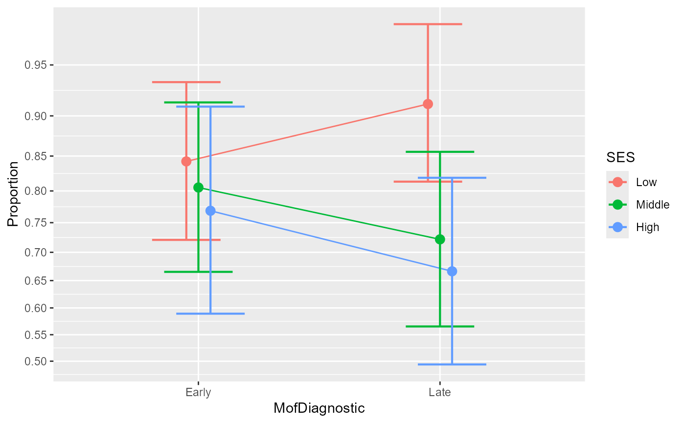
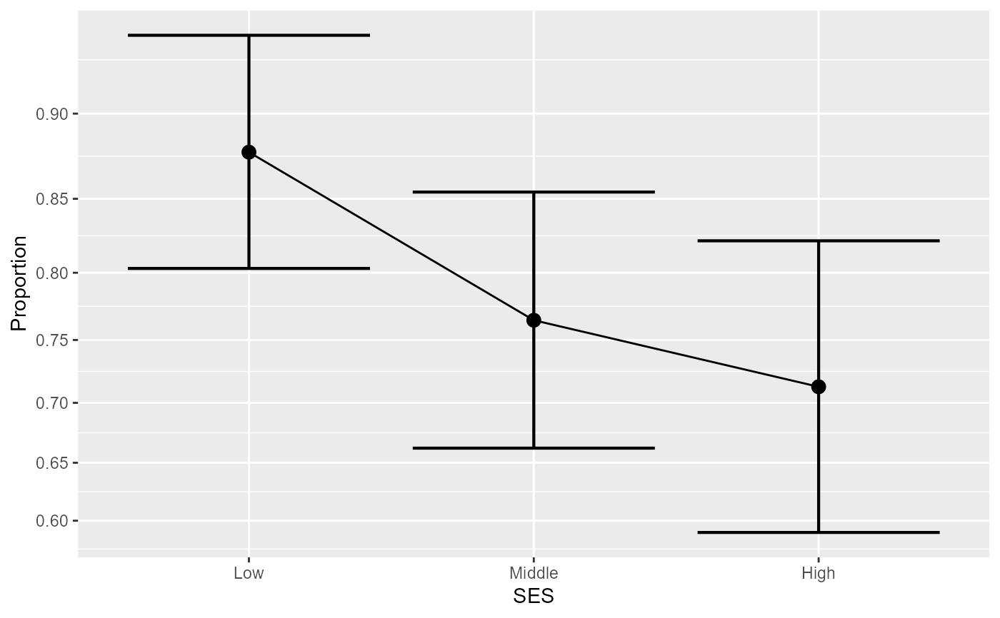

These are the data from the second example reported in (Laurencelle and Cousineau 2023) . It shows fictitious data with regards to the proportion of graduation for persons with dyslexia as a function of the moment of diagnostic (early or late) and the socoi-economic status (SES). The design is a between-subject design with 2 x 3 = 6 groups.
ArticleExample2An object of class data.frame.
Laurencelle L, Cousineau D (2023). “Analysis of proportions using arcsine transform with any experimental design.” Frontiers in Psychology, 13, 1045436. doi:10.3389/fpsyg.2022.1045436 .
library(ANOPA)
# the ArticleExample2 data shows an effect on the success to graduate as a function of
# socioeconomic status and moment of diagnostic:
ArticleExample2
#> MofDiagnostic SES s n
#> 1 Early Low 75 89
#> 2 Early Middle 62 77
#> 3 Early High 40 52
#> 4 Late Low 84 92
#> 5 Late Middle 52 72
#> 6 Late High 42 63
# perform an anopa on this dataset
w <- anopa( {s;n} ~ MofDiagnostic * SES, ArticleExample2)
# a small plot is *always* a good idea
anopaPlot(w)

# here the plot is only for the main effect of SES.
anopaPlot(w, ~ SES)
